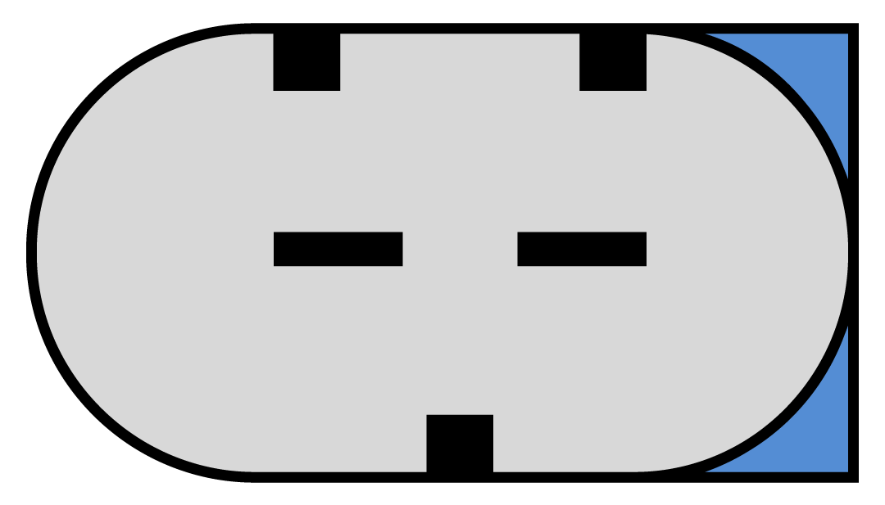

中文
nederlands
english
deutsch
français
español
português
中文
русский
发电机连接
-
lin 連接
了解更多
-
bss 連接
了解更多
BSS-1 = 仅显示机械或电气错误
BSS-2 = 仅显示机械或电气错误
BSS-3 = 可显示机械和电气错误
-
大众连接器
了解更多
-
c 連接
了解更多
L = 灯
IG = 点火
C = 计算机
FR = 反馈
-
com 連接
了解更多
开发这类连接是为了节省燃油。
这类连接使用数字信号，速度比其他信号快。
发电机对汽车计算机指令作出的反应越快，就越节省燃油。
通信速率被称作波特率。
-
dfm 連接
了解更多
-
pcm 連接
了解更多
-
rlo 連接
了解更多
最近我们开发了新的 LIN 协议，重新制定后将其用于 多种 Motoplat 检测仪。目前，LIN 信号将与其 ID 代码一起从 LIN_1 显示到 LIN_21。如果市场上出现新的 LIN 协议，我们可以根据需要添加更多编号。之所以这样，是为了让客户的再制造开发更轻松、更经济、更清楚。而且，您不需要每台发电机都配备一个调节器，只需按组或 ID 代码编排调节器即可。
因此，如果您知道梅赛德斯和大众汽车上使用 LIN-2，则只用选择较便宜的即可，在兼容的同时还省钱和节省存储空间。LIN-1 和 LIN-2 协议从 2002 年起使用到 2011 年。不同代码的 LIN-1 和 LIN-2 调节器不可互换：LIN-1 只能用 LIN-1 更换，LIN-2 只能用 LIN-2 更换。LIN-2 以上的所有调节器具有不同的系统和波特率，因此也不能互换。屏幕上显示的代码是发送至电子控制单元供识别的调节器标识码。就是说，它们使用相同的语言。
这是将显示协议 (ID) 的地方，例如：宝马 LIN-Infineon 或新的法雷奥 CG 系列发电机。在您检查发电机时，如果屏幕上出现 LIN-4（本田）协议，但又不是本田发电机，则意味着它由相同的协议控制。LIN 协议相同的博世和法雷奥发电机无法互换，由于它们使用不同的地址 (ID)，因此无法在汽车上使用。
下载以下Excel文件以了解不同的协议代码和汽车制造商的概述。
请注意，我们已自行承担起了重新制定 LIN 协议的责任。 除 LIN-1 和 LIN-2 外，上述 19 项 LIN 协议并未正式存在于原始汽车制造商所生产的汽车中。
以上提及的汽车制造商仅作示例。
BSS 代表比特同步单线。有 3 种不同的 BSS 信号。它们之间的区别能够表明不同的发电机错误：
BSS-3 可与 BSS-1 和 BSS-2 互换，因为它是通用的（BSS-3 可提供有关 两种错误的信息)。BOSCH 电压调节器均为 BSS-3，因此切勿将其与其他调节器互换。使用 VALEO 调节器时要小心，因为它们有 3 种不同的选件：BSS-1、BSS-2 和 BSS-3。据我们所知，目前无法买到新的 VALEO BSS-3 调节器。
例如, 在 2003 年及之后生产的宝马 E60 系列汽车上，安装的 Valeo TG17C010 发电机载有 BSS-2 系统。几年后它们仍使用了相同的发电机，但编号变成 了 TG17C048 并载有 BSS-3 调节器。如果您为该款发电机订购 Valeo 电压调节器，则收到的会是 BSS-2 调节 器。如果您购买新的 TG17C048 发电机，则会配备 BSS-3 调节器。
我们检查过来自宝马 E60 电子控制装置的信号，并认为它安装的是 TG17C048 (BSS-3) OEM发电机，但实际上却是 BSS-2。可能是宝马工厂正准备将协议升级至 BSS-3，但目前为止，他们的汽车只 配备了 BSS-3 发电机。 最有可能的是将不再开发 BSS 协议，因为他们将来会使用新的 LININFINEON。
在宝马 TG17C034 和大众 TG17C020 也存在相同的情况：OEM 的是 BSS-3，售后却是 BSS-2，但使用起来应该都没问题。在这种情况下，我们建议订购其中一种 Valeo 电压调节器，然后检查它实 际上是 BSS-1、BSS-2 还是 BSS-3 调节器。这样就能确定在该发电机上可 以安装哪种 BSS 调节器。这样就不必为每种不同的 BSS 发电机准备许多不同的调节器。
我们通过检查所谓的“大众连接器”内部滑块的位置，调查了弄清楚发电 机连接的可能性，结果是可行的。
正如您在下面的 COM 连接器中所看到，下方的滑块直接穿过上方另外两 个滑块之间的空间。 在这种情况下，可以 100% 肯定它就是 COM 连接器。它是单插头还是双插头连接器，都没有关系。
图形 1
看看下面的图 2 和图 3，您会发现滑块所在的位置与上面的 COM 连接器 不同。图 2 显示底部有两个滑块。右侧的一个滑块与上方的滑块相对。请看图 3，滑块位置正好与图 2 连接器相反。

图形 2

图形 3
在丰田和本田等品牌汽车的发电机中，您可以找到 C 连接。一般您可以通过方形和椭圆形插头来辨别 C 连接。
连接定义如下：
C 连接似乎很难检测，但绝非如此。 只需将 C 端子接地，便会发现 VSP 下降至 12.8 伏。例如，在汽车加速过程中，该端子由电子控制单元接地，并且发电机会暂 时被禁用。这样做是为了节省燃油。
现代发电机配备了 COM 连接。 下面您会看到更多有关这类连接和协议的信息。
什么是 COM? COM 代表通信或计算机，它是一种数字通信信号，也可以用字节表示。
功能：
com 連接
波特率 2400 KB
BSS-1
BSS-2
BSS-3
LIN-1.3 9600KB
LIN-2.1 19200KB
LIN-1
LIN-2
LIN-3
LIN-4
LIN-5
LIN-6
LIN-7
LIN-8
LIN-9
LIN-10
LIN-11
LIN-12
LIN-13
LIN-14
LIN-15
LIN-16
LIN-17
LIN-18
LIN-19
LIN-20
串行连接的传输速率，即每秒钟通过一个串行通道可以发送的比特量。一种衡量调制解调器传送数据速率的方法。经常与 bps（每秒钟传送的比特数）混淆，波特率实际上测量的是一秒钟内发生的事件数量或信号变化次 数。事实上，高速数字通信中的一个事件可以编码为多个比特，波特率不 一定与 bps 同义，后者是一种更精确的度量单位，适用于调制解调器。例 如，9600 波特的调制解调器，4 比特/事件编码，实际上工作速率为 2400 波特，但以 9600 bps（2400 个事件乘以 4 比特/事件）传输信息，则会 被称作 9600 bps 调制解调器。
DF(M) 代表数字现场监控。每个发电机品牌对于 DF(M) 连接都有不同的缩写，例如：FR（现场返 回），DF（数字现场），DFM（见上），M（监控），LI（负荷指示 器）。 但它们的工作方式都相同。
功能。关于 DFM 连接，有正反向测量，都会利用块脉冲方法。 当发电机负荷增加时，块脉冲会根据汽车应用而变得更宽或更窄。它以 % 衡量，也叫做 PWM（脉冲宽度调制）。 汽车电子控制单元知道在充电过程中的某个特定时刻的负荷。如果负荷过高，汽车电子控制单元会关闭一些汽车附件，或提高怠速。
DFM (M,FR,DF,LI,F) 是发电机发送至汽车电子控制单元的块信号（信 息）。 它表明发电机转子的负荷水平，也称作电磁力。这对发电机所产生的电能 具有直接影响。
电压由开启转子电流（比如频率 150 HZ）来调节，这样就会改变电磁力。电流的持续时间越长，忙闲度将会越宽。
PCM(动力总成控制模块)用于欧洲市场上的福特和路虎汽车。PCM 信号的工作方式同 DFM 信号，但现在汽车电子控制单元会将此信号 发送至调 器来调整 VSP(电压设定点)，同时根据该特定时刻的蓄电池 状态 (AS) 和负荷 (LI) 来进行调节。
脉冲越宽，VSP 则越高，反之亦然。该信号具有标准设置: 5 伏，125 Hz 和 55% PWM，以获得约 14.2 伏的 VSP。
丰田汽车中使用 RLO 终端，比如 104210-4521。
关于 RLO 终端，它先连接到汽车电子控制单元，再连接到蓄电池上或其附 近的传感器。这种传感器会不间断地测量蓄电池状态，并且该信号具有赫 兹频率非常低 (7.5 Hz) 的块脉冲。该信号也取决于 PWM 来改变 VSP。块脉冲越宽，VSP 则越低。
技術文章

reversible alternator
alternator and starter
Considering construction solutions, these Valeo alternators can be divided into two different groups. (English only)

electronically
controlled alternator
The production and distribution of electric energy on the board of a modern car already require...(English only)
automobile
start-stop systems
One of the ways to reduce the fuel consumption of a vehicle is to turn off the engine...(English only)